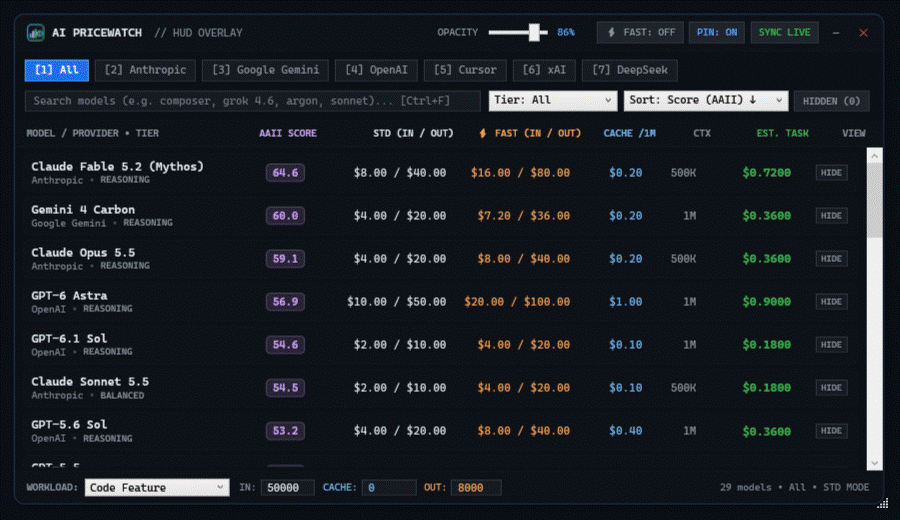

AI PriceWatch
A lightweight, translucent terminal HUD overlay that lets you compare AI model token pricing, inspect AAII intelligence scores, and estimate task costs from anywhere with a single hotkey.
Windows SmartScreen note: If Windows shows "Windows protected your PC",
click More info → Run anyway. (Unsigned indie build.)

Standard vs. Fast Mode
Compare Standard and Fast/Priority $/1M token rates side-by-side across Anthropic, Google Gemini, OpenAI, Cursor, xAI, and DeepSeek.
Task Cost Calculator
Pick a workload preset or enter custom input, cache, and output token counts to see exact dollar estimates and the Best Value model.
Offline-First + Live Sync
Works immediately offline with a curated catalog, plus one-click Live Sync from OpenRouter and automatic in-app updates.
Quick Keyboard Shortcuts
Ctrl+Shift+Space — Summon / hide HUD
Alt+1 .. 7 — Switch provider tab
Ctrl+M — Toggle Fast mode pricing
Ctrl+F — Focus search bar